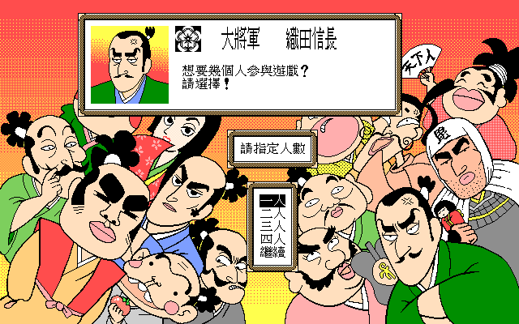
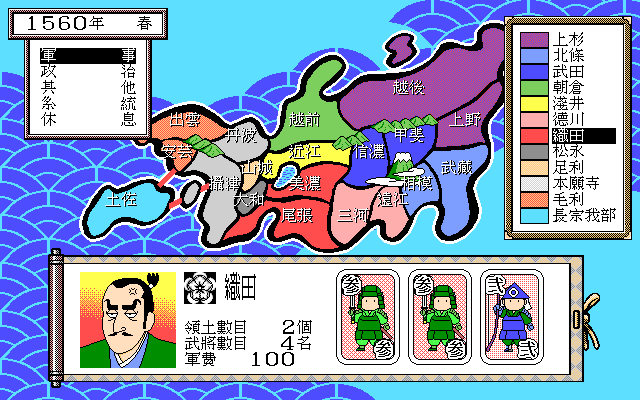

名稱：戰國 (中文版) 簡介：Family 1996年出品的回合制策略遊戲，由天堂鳥中文化並代理發行 [待補]。

備註：本版為光碟版 保護：光碟版為光碟，磁片版為顏色密碼，破解碼： SENGOKU.EXE 74 15 9A 25 (共2個，不用輸入密碼) EB 66 -- -- 或 74 40 6A 07 (密碼隨便輸入) EB -- -- -- 備註：光碟版與磁片版除了播放音軌之外，尚不清楚還有那些差異。 檔案：sengoku-disk.rar = 磁片版